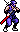
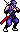
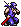
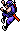
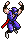
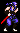
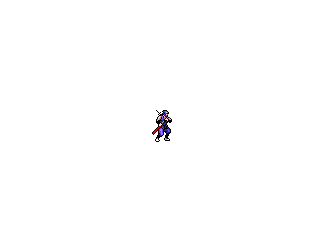

The Ninja Dragon...our hero is back...and badder than ever!!!
Here we have the Arts of the Ninja...the tricks of the trade...the tools of destruction...the ::slap:: ok, I'm better now.
I'll describe how each has been amended, and even preview a couple of new ones!
I'll describe how each has been amended, and even preview a couple of new ones!
BLADE ARTS

Shurikens
You may notice that I've added a frame or two showing his properly throwing the star. That's pretty much it for this one.

Windmill Stars
Same for this one, except I've also added frames which show him catching it.

...the home of the Angel...
Vacuum Wave Blades
One this one, I've added frames which display him throwing each blade with each hand. Subsequently, when he's hanging from a wall or pipe/vine/whatever, he'll have to throw one at a time.

Fire Wheel
This is where it all begins. For Flame Arts, instead of just throwing it out like he usual does, I've shown Ryu summoning a spell which he then throws in a full spread. This is the new Fire Wheel.

FLAME ARTS

Dragon Spirit Fireballs
Invincible Flame Wheel
Once again, he summons the power of the Dragon Fireballs into a full spread, creating some delectable Demon mesquite!
Steak, anyone?
Steak, anyone?

Like Ninja Gaiden I, this will only be a temporary weapon, located in the most remote, heavily-fortified areas. He can acquire it, and use it anytime he likes...but he can only use it once. Like the other Arts, he summons the flames in a spell. Here, we have him displayed using this Art in four of the five primary positions.

STAND

DUCK

CLIMB

HANG
NEW ARTS
Fire Wave*
This new Art is an effective tactic against ground forces as it sends a burst of flames skipping across the ground, leaving behind flares that will toast your enemies.

*Special Thanks to RyF, the newest member of the NG4 team.
Starburst Flames
This powerful new weapon sends three spurts of flame above Ryu, which burst at the apex of flight and shower your enemies with flames, killing everything dumb enough to be around. A great move against (some) bosses.
Hurricane Blades
This new art sends four blades that devistate everything on the screen, which is why it takes so much out of Ryu. Ideal for multiple enemies or some that hide in those "hard to reach" areas.

*Ninja Gaiden, Ninja Gaiden 2: Dark Sword of Chaos, and Ninja Gaiden 3: Ancient Ship of Doom, are trademark and copyright property of Tecmo Inc. Display of the images on this site are for ENTERTAINMENT PURPOSES ONLY!
I, the Guardian, am not for profit in the creation of this website and make absolutely no money for it. I do not work for Tecmo Inc., nor am I affiliated with Microsoft or Nintendo. I am simply an enthusiast of the Ninja Gaiden Series.
I, the Guardian, am not for profit in the creation of this website and make absolutely no money for it. I do not work for Tecmo Inc., nor am I affiliated with Microsoft or Nintendo. I am simply an enthusiast of the Ninja Gaiden Series.